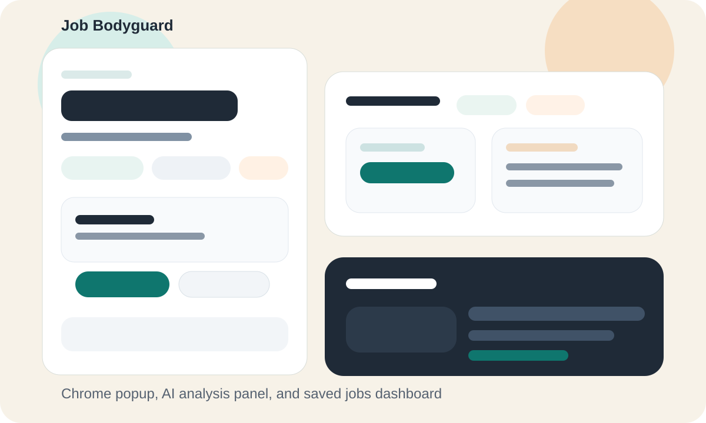
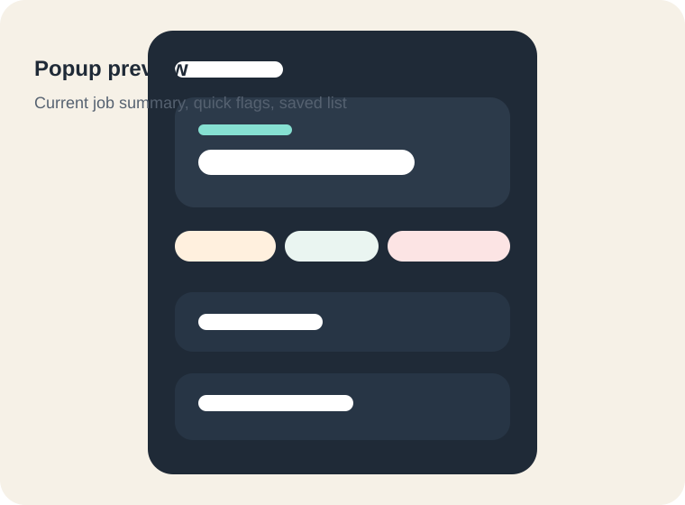
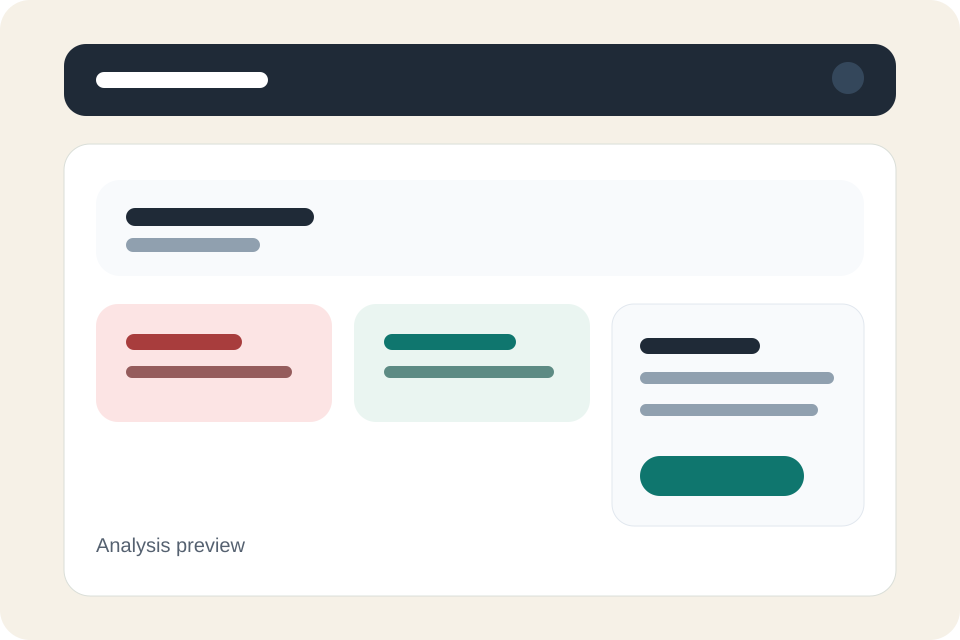
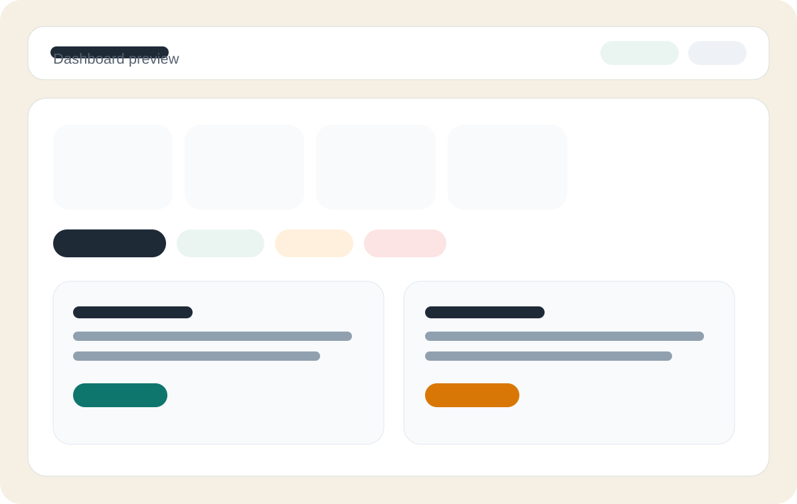
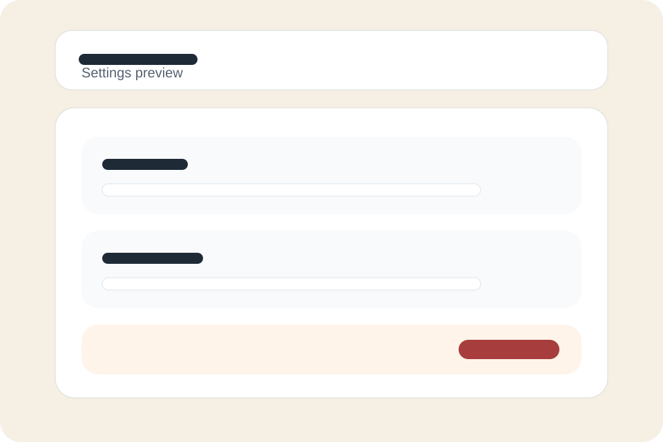

Chrome extension for job search due diligence
See what a job posting is really telling you before you apply.
Job Bodyguard surfaces hidden salary data, stale listings, suspicious language, and resume gaps directly on LinkedIn, Indeed, and HH.
- Passive scan with no backend requirement
- AI review with your own API key
- Local dashboard for saved applications

What the extension covers
Practical signals first
Page scan
Extracts visible and hidden metadata from job postings without forcing a full dashboard workflow.
Risk review
Summarizes red flags, positive signals, job age, and salary discrepancies in a way you can act on.
Resume fit
Compares your stored resume against the role and suggests targeted adjustments instead of generic advice.
Application tracking
Keeps a simple saved-jobs board with statuses, export support, and a clean local workflow.
UI preview
How it looks before installation




Install from source
Current distribution model
- Clone the repository and run `pnpm install`.
- Build the extension with `pnpm --filter @job-bodyguard/extension build`.
- Open `chrome://extensions`, enable developer mode, and load `apps/extension/dist`.
- Optionally download a packaged zip from the GitHub releases page.